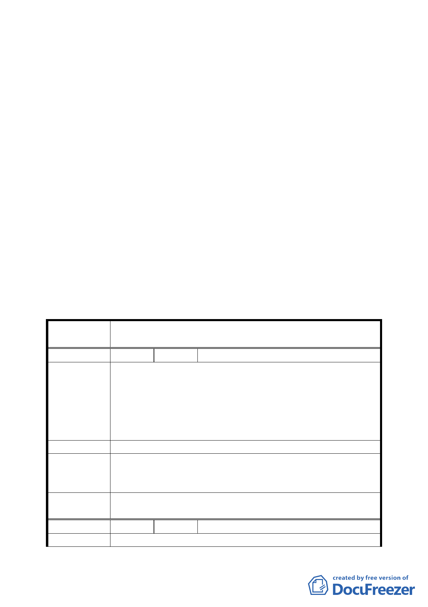

年 7 月 11 日北市都規字第 09532201600 號函檢送相關資料到
會。
決議：
一、師專用地涉及地主意願整合及開發方式可行性評估等議題，
因無法於本計畫審議前完成檢討計畫，退由市府另案辦理。
二、有關「主木 7」土地涉及有價徵購且開闢經費昂貴，經交通單
位評估工程效益不高，且欣欣客運目前向國有財產局洽商承
租土地之情形下，維持原「公車調度站用地」。
三、福興公園東側原 8 公尺計畫道路，同意恢復原「道路用地」，
至於護坡用地部分，涉及技術層面問題則另案處理。
四、其餘計畫內容依專案小組審查結論及都市發展局函送之修正
書表辦理。
五、公民或團體所提意見討論決議，詳如后附綜理表。
臺北市都市計畫委員會公民或團體所提意見綜理表
案 名 臺北市文山區都市計畫通盤檢討（主要計畫）案
編 號 １ 陳情人 高肇濃（09430075500）
建議位置：文山區景美段三小段 278、278-1、279、280、281、
282、283 至 298、299、300、301 地號。
陳 情 理 由 建議理由：
（ 景 美 ） 配合鄰近地區商業機能（漢神百貨、愛買百貨），塑造整體商
圈環境，促進商業繁榮，帶動地區發展。同時鼓勵目前閒置
土地之開發，加速都市環境之更新。
建 議 辦 法 將街廓內景興路及景中街之住四土地變更為商業區。
專案小組
審查結論
本陳情位置地區現況以住宅使用為主，同意發展局之意見維
持原計畫。
(94.7.4)
委員會議
決議
依專案小組審查結論辦理。
編 號 ２ 陳情人 沈星耀（09430076900）
陳 情 理 由 一、依「主景 1」萬隆街 36 號到 236 巷口有 8-10 米寬既成巷
四